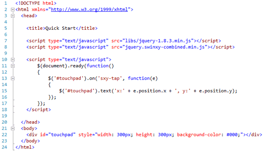

Created: 01/02/2013
By: SwinxyApps
Thank you for purchasing SwinxyTouch. If you have any questions that are beyond the scope of this help file, please feel free to email via my contact form here. Thanks so much!
Out of the box SwinxyTouch is fast to install with sensible defaults suitable for most users situations, to get started just ensure you have included jQuery and SwinxyTouch into your page as show..

Once included you are ready to start making use of the various pointer and gesture events, details of which are available online here.
For the latest API Options & Methods listings please see the documentation page on SwinxyTouch.
This package contains all sources and a combined minified version of all scripts, for quick deployment out of the box the recommended files are :-
libs/jquery-1.8.3.min.js
jquery.swinxy-combined.min.js
jquery.swinxy-combined.min.js :-
Combined and minified JS file encompassing the below files, if you wish to make the file smaller you may repackage with just the files you need but be sure touch.js is always the first within your new minified file.
Once again, thank you so much for purchasing this item. As I said at the beginning, I'd be glad to help you if you have any questions relating to this item. No guarantees, but I'll do my best to assist.